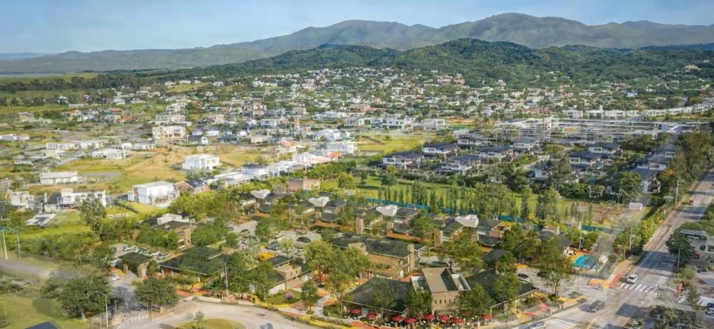
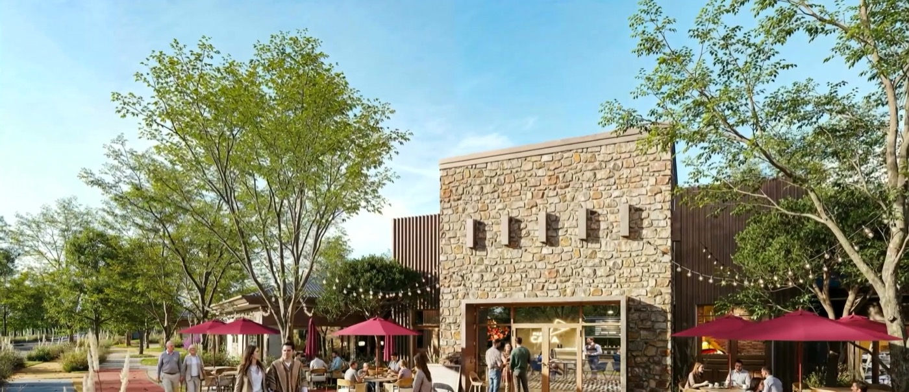
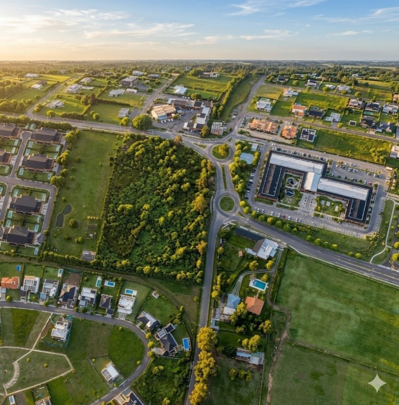
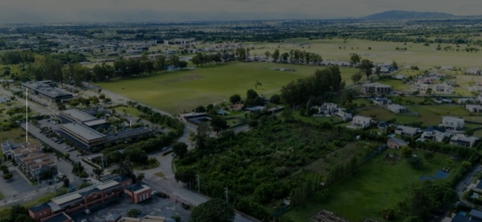
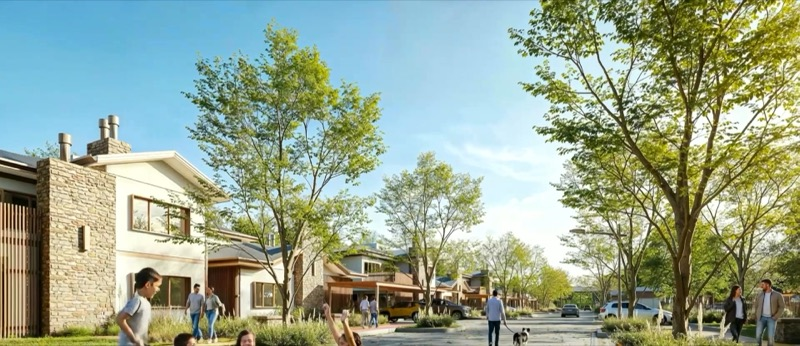

El centro dejó de crecer por expansión
Crece reinterpretando su propio patrimonio: casonas, oficinas, hotelería boutique y uso mixto.
Somos el partner estratégico que mueve el real estate.
Conectamos visión, estrategia, comunicación, negocios y personas para transformar oportunidades en proyectos que avanzan.
Nacimos en Salta con una forma distinta de mirar el real estate. Leemos oportunidades, conectamos a las personas correctas y armamos la estrategia necesaria para que cada proyecto avance. No operamos desde un catálogo: trabajamos desde el criterio, la red y la capacidad de generar movimiento.
No se trata solamente de vender. Se trata de entender qué mover, cómo hacerlo y con quién.

Mavenz funciona como un universo de capacidades conectadas. Cada proyecto activa una combinación diferente.
Leemos el negocio, el mercado y el contexto. Definimos posicionamiento, oportunidades, escenarios y una hoja de ruta.
Construimos el relato, la identidad aplicada, los contenidos y las herramientas que hacen visible y entendible cada proyecto.
Diseñamos campañas, lanzamientos, experiencias y acciones para generar interés, conversación y demanda.
Ordenamos el producto, el proceso comercial, los materiales, los canales y el seguimiento hasta la venta.
Seleccionamos y analizamos oportunidades para acompañar decisiones con información, lectura y contexto.
Conectamos activos, ideas y personas para abrir posibilidades que todavía no estaban estructuradas.
El lugar físico donde el universo toma forma: trabajo, reuniones, experiencias, comunidad y movimiento.
Seis territorios de Salta, leídos uno por uno. Es la parte del universo que se apoya en el suelo: dónde está pasando algo y por qué.
Oportunidades
Mavenz no aplica una fórmula cerrada. Primero entiende qué necesita moverse y después arma la combinación correcta de estrategia, equipo, red y ejecución.
Entendemos el contexto, el negocio, el proyecto y la oportunidad.
Elegimos una dirección y ordenamos prioridades, objetivos y escenarios.
Convocamos a las personas y capacidades adecuadas para ese desafío.
Transformamos la estrategia en comunicación, gestión, comercialización y acciones concretas.
Medimos, ajustamos y sostenemos el movimiento hasta alcanzar el objetivo.
Espacio Mavenz es el punto de encuentro físico de nuestro universo. Un lugar para trabajar, recibir clientes, presentar proyectos, conectar profesionales, generar experiencias y abrir nuevas conversaciones dentro del real estate.

Foto de referencia · falta material de Espacio MavenzUn espacio pensado para crear, planificar y tomar decisiones.
El escenario para mostrar proyectos y activar oportunidades.
Encuentros que conectan desarrolladores, inversores, profesionales y nuevas ideas.
Charlas, contenidos, activaciones y momentos que construyen marca y movimiento.
No es un catálogo. Es una selección de proyectos, desarrollos y oportunidades en los que Mavenz participa o cree.

Un lugar donde la vida cotidiana se vuelve excepcional.
Rol Comercialización y comunicaciónEstado En comercialización
Conocer el proyecto
La ciudad crece hacia la naturaleza.
Rol Lectura de territorio y articulaciónEstado Oportunidad abierta
Solicitar información
Donde el patrimonio comienza a transformarse.
Rol Estrategia e inversiónEstado En análisis
Solicitar informaciónSelección de muestra · Vero define qué proyectos van y con qué fotos
La red forma parte del método. Equipo, partners, especialistas, desarrolladores y aliados que se conectan según lo que cada proyecto necesita mover.
No es un directorio de logos. Es quién entra en cada movimiento.
Análisis, ideas, tendencias y lecturas del mercado. Nuestra forma de mirar, escrita.
Crece reinterpretando su propio patrimonio: casonas, oficinas, hotelería boutique y uso mixto.
Qué cambió en cómo se elige dónde vivir en el corredor norte de Salta.
Los Valles Calchaquíes combinan patrimonio, disfrute y renta en una misma decisión.
Notas de muestra escritas sobre el Mapa Mavenz · reemplazar por las reales